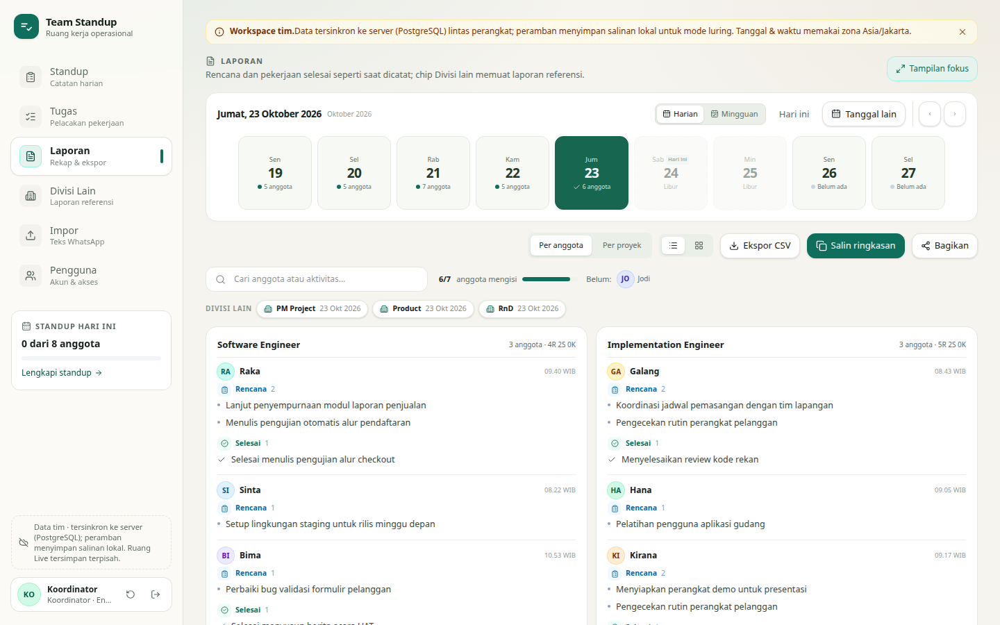
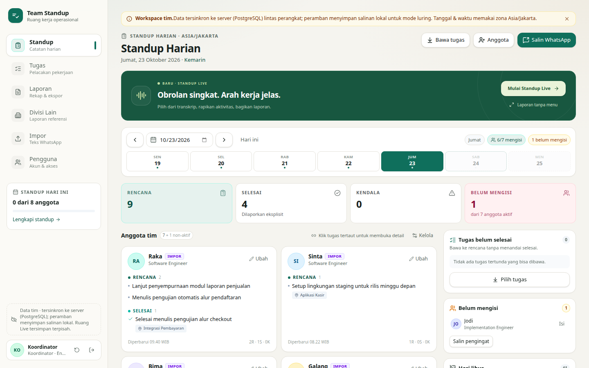
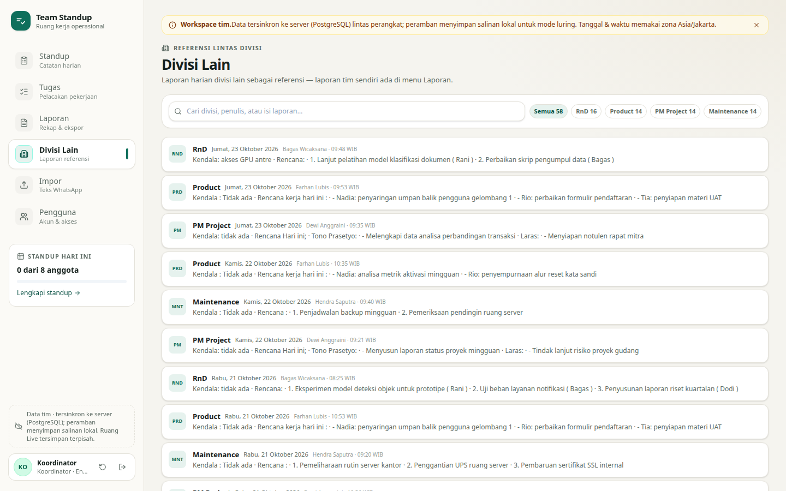

Standup harian tim, tanpa laporan berantar di grup chat
Catat Rencana / Selesai / Kendala per anggota, lacak tugas, impor laporan lampau dari ekspor chat, jalankan sesi Live, dan bagikan rekap lewat tautan ber-kunci — semuanya dalam satu aplikasi berbahasa Indonesia.
Tanpa layanan berbayar · tanpa API key · data tetap di PostgreSQL-mu

Semua yang tim kecil butuh untuk rutinitas standup
Dibangun dari kebiasaan nyata tim operasional — bukan teori.
Standup sadar kalender
Sabtu–Minggu dan hari libur nasional Indonesia otomatis non-aktif; anggota resign tetap terbaca di riwayat tanpa dihitung "belum mengisi".
Impor dari chat
Tempel ekspor grup chat; parser mengenali format laporan 👷 Nama, membandingkan tanggal judul dengan stempel waktu pesan, dan menandai yang perlu dicek.
Standup Live
Sesi obrolan terpandu koordinator: pilih pesan → rapikan jadi aktivitas → terbitkan; hasilnya langsung masuk riwayat standup dengan tautan baca-saja.
Bagikan ber-kunci
Satu klik membuat tautan /bagikan/…?k=… untuk manajer atau divisi lain tanpa akun — hanya rentang yang dibagikan yang terlihat, hangus 180 hari.
Divisi lain
Laporan harian divisi lain dijadikan referensi — ekstraktor arsip chat disertakan, plus menu khusus untuk menelusurinya.
Login & pengguna
Akun internal (sesi cookie httpOnly, sandi scrypt), peran koordinator/anggota, dan manajemen pengguna — bukan sekadar demo terbuka.


Jalankan sendiri dalam 5 menit
Butuh Node.js 20+ dan PostgreSQL 14+. Tabel dan data contoh dibuat otomatis.
Unduh & pasang
git clone https://github.com/ther12k/team-standup lalu npm install.
Sambungkan database
Isi DATABASE_URL di .env.local — lihat .env.example.
Jalankan
npm run dev, buka localhost:3000, masuk dengan admin / standup123.
Ganti sandi
Akun koordinator diminta mengganti sandi bawaan sebelum aksi admin dibuka.